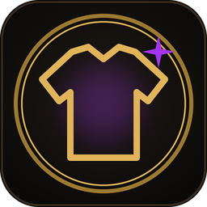
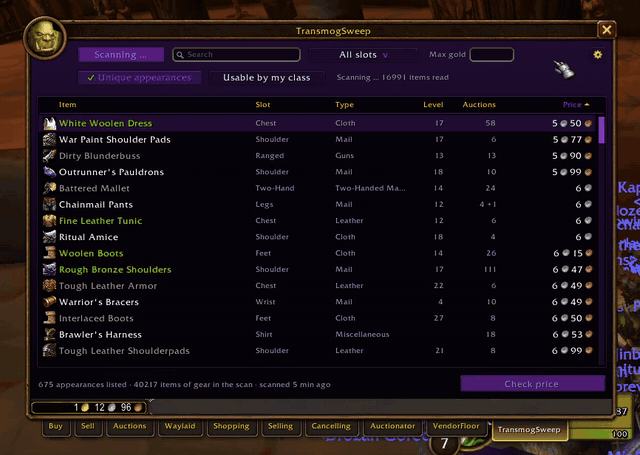
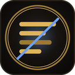

TransmogSweep
Every transmog appearance on the auction house you have not collected yet, cheapest first, as a tab in the auction house window. Also finds the recipes your character has not learned yet. Buy them top to bottom with one button.
See it in action
A recreation in your browser, close to what you see in game.
Recorded in game

What it does
Settings
- ◆Its own settings window: the gear in the tab or the addon menu at the minimap. Drag it anywhere, changes apply live.
- ◆Unique appearances, Usable by my class, Hide items above my level, Hide what I bought (until you learn it).
- ◆Learnable now for the recipe list: only recipes your skill, level and other requirements allow today.
- ◆Small tab: follows VendorFloor or Auctionator when unset.
- ◆Show hidden appearances and Forget purchases to reset.
- ◆Alt+click a row shows a diagnosis to copy into a bug report.
Changelog
- Recipes: a second list next to Appearances with the recipes your character has not learned yet, for its own professions, cheapest first. Buy them top to bottom like appearances.
- "Learnable now" (on by default) shows only recipes your skill, level and other requirements allow today. Off: recipes for later too, their required skill in red.
- Profession filter, required skill column, right-click hides a recipe, Alt+click shows a diagnosis.
- The chosen list (Appearances or Recipes) carries a tick. The status line moved to the bottom of the window.
- New icon in the addon list and on the minimap button, part of the new Bencepo logo family.
- Faster scans: looks the game already showed as collected are remembered, so later scans only check new items.
- The list shows up as soon as the auction house has answered and fills while your collection is checked. You can start buying right away.
- Shorter pause between two purchases.
- Colour filter: looks whose item names suggest a colour (Crimson, Ebon, Azure …), across all items that share the look.
- The search also finds a look through the names of the other items that share it.
- Slot and colour lists open reliably (own list instead of the game menu).
- TransmogSweep tab in the auction house window: every transmog appearance you have not collected yet, cheapest first.
- Fast scan of weapons and armor only, any time, no 15-minute wait.
- Collected status account-wide, as the game's own item tooltip shows it.
- Unique appearances (one row per look) or completionist mode; optional filter for your class, plus search, slot, maximum price and level.
- Buy from the top of the list with one button: after each purchase the next item is checked by itself.
- Bought looks stay hidden until learned. Right-click hides a look, Ctrl+click previews, Alt+click shows a diagnosis for bug reports.
- Settings window of its own with a "Report a bug" button.
More from Bencepo
VendorFloor

StatTrim
LevelTrail
Feedback, bugs and ideas
Every addon is tested in game before it ships, but Forever changes often. Tell me what breaks and what you miss.
Report a bug
Open an issue on GitHub (the form asks for everything needed) or leave a comment on CurseForge: what you did, what happened, and the error text from BugSack if there is one.
Share your run
LevelTrail turns your export into a share image for Discord or Reddit, VendorFloor does the same for your flips. Names can be hidden.
Suggest a feature
Ideas that make leveling faster or the UI calmer have the best chance. Comments on CurseForge reach me directly.
Support the addons
All addons and pages are free and stay free, without ads or cookies. A privacy-friendly counter only tallies page views. If they save you time in game, a tip keeps new features and fixes coming.